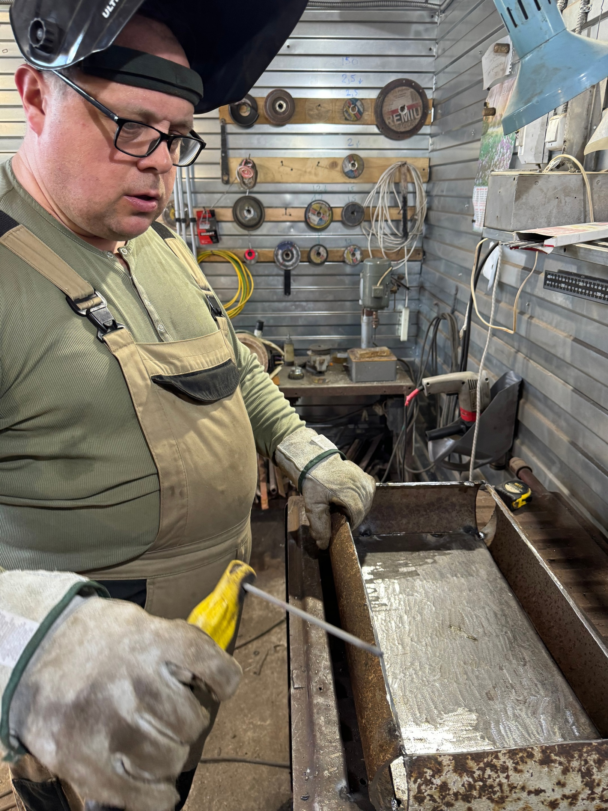
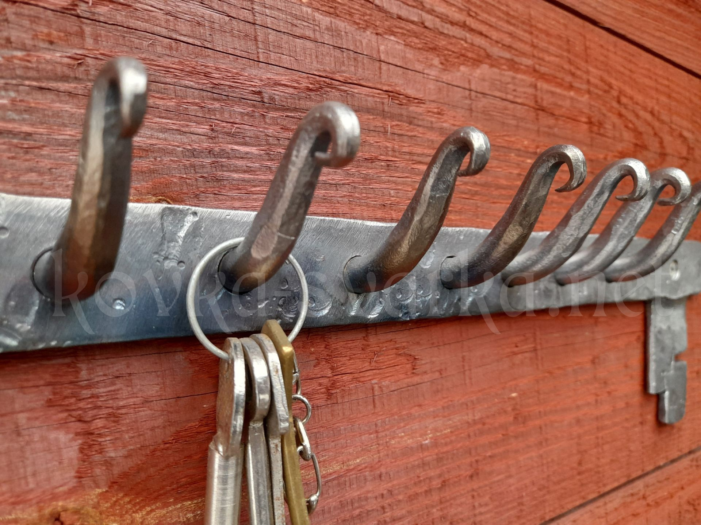
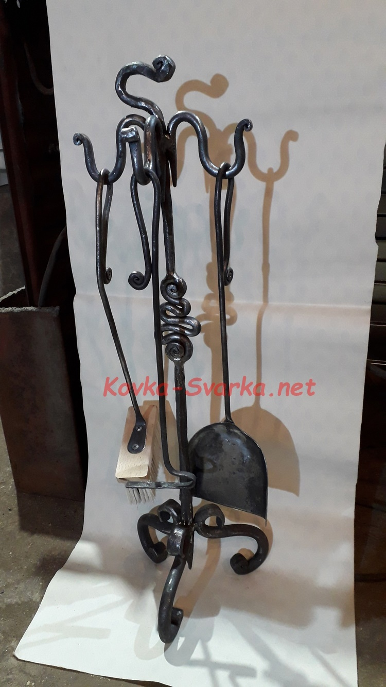
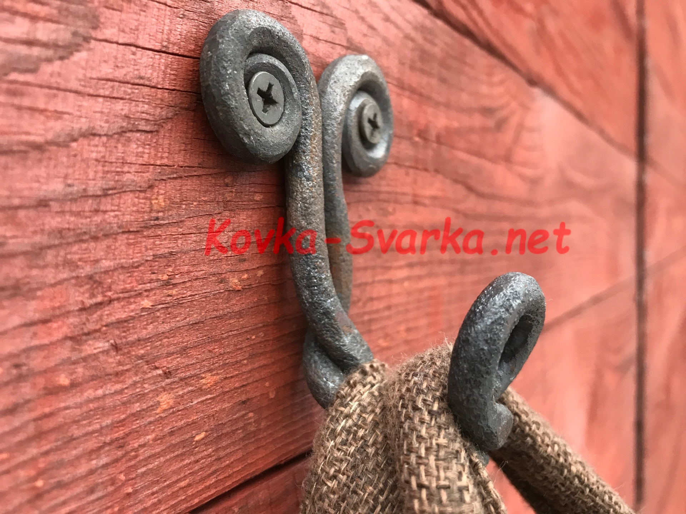
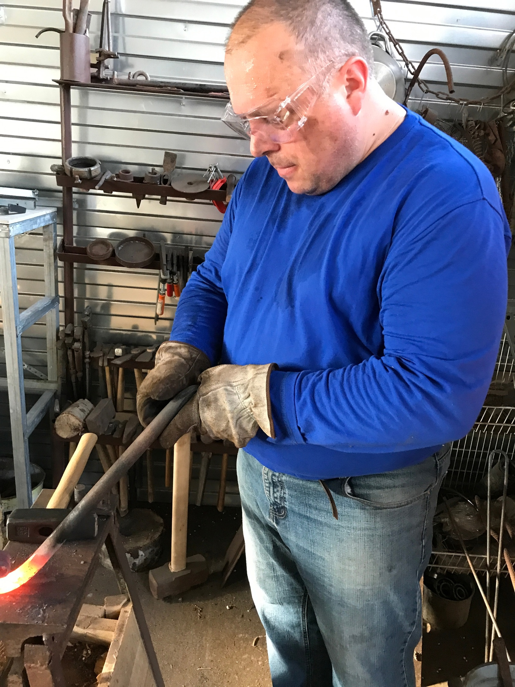
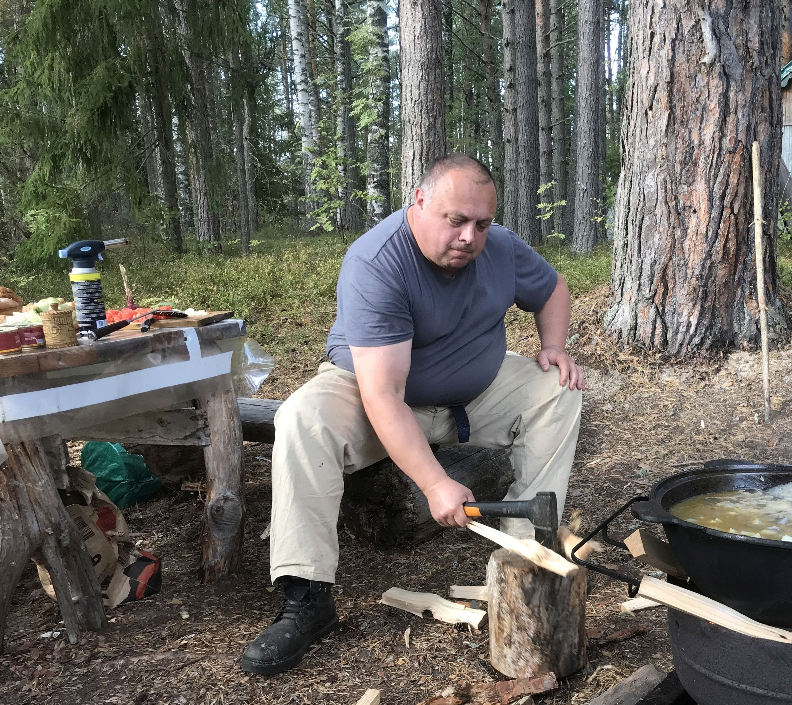

Мой ученик, Алексей Васильев из Лодейного поля занимается сваркой и ковкой металла. На курсе он осознал, что может превратить свое хобби в источник дохода. Ранее он занимался ковкой и сваркой только для себя и своих друзей, но, понял, что его изделия могут быть востребованы.
Обучение прошло легко, хотя информации было много, и он планирует повторить материал, чтобы лучше закрепить знания. Теперь он готов искать клиентов и реализовывать свои идеи. Учиться дальше ремеслу и превратить свое хобби в успешный бизнес.

— Алексей, Расскажи, что было до курса? Сколько клиентов? какой средний доход? Как искал клиентов?
— До курса клиентов практически не было. Потому что я занимался ковкой сваркой как хобби и на заказ ничего не делал. Порой иногда откуда-то появлялись. Ну там через кого-то, какие-то случайные заказы. Но я брал их не за деньги. Да и было очень, очень редко. За все время может парочку заказов каких-то сделал по мелочи, а так, в основном, занимался ковкой чисто для себя.
Снимал для канала на ютубе, чтобы был контент, а изделия шли либо там у себя где-то в хозяйстве, либо на подарки друзьям и знакомым, поэтому считаю, что не было вообще никаких клиентов и дохода не было от сварки. Наоборот расходы только)
Я на курс пришел так как меня зацепила фраза в твоей рекламе, типа, там был такой вопрос: - "Ты еще долго будешь делать изделия, которые будут лежать в столе?" И я поймал себя на этой мысли. Действительно. Я там сделал какие-то штучки прикольные и они просто в столе лежат. Почему бы на них не заработать. И тогда я начал присматриваться к курсу.
— Какие сложности были во время обучения на курсе? Насколько сложно было учиться? За сколько прошел обучение?
— Особо так сложности не было. Просто очень много материалов, все сразу не запомнишь. Поэтому я хочу заново повторить, чтобы применить то, что было пропущено. Я и сразу проходил с такими мыслями, что я к этому обязательно вернусь, потому что я прямо чувствовал, что я не все усваиваю.
Учиться для меня было не сложно, все технические штуки мне были понятны. И за что я очень благодарен, что все расписано, прям у каждой кнопочки. Что материал своевременно отслеживается, все изменения вконтакте вносятся и в курс постоянно. Так что очень легко по кнопочкам, это просто огромная экономия времени. Сам бы до этого доходил бы годами, годы потерял и ничего бы не собрал.
Самое сложное, что когда проходил разные виды рекламы. Не столько сложно, сколько что вот все надо попробовать и найти свое. На косвенный интерес и на разные виды у меня не срабатывали, пока я не дошел до рекламы по ключам. По ключам у меня вот сработало. Хотя еще раз повторюсь, возможно, что когда все еще раз буду повторять, то я что-то новое для себя открою.
А так проходил где-то несколько месяцев. Я брал рассрочку, и вот вместе с погашением рассрочки и курс прошел.

— Скажи, а примерно с какого момента на курсе ты начал совершать продажи? Принимать заказы из ВК?
— А у меня первые заказы пришли уже с начала обучения. Самый первый заказ был и ко мне обратилась тоже ученица курса, она занимается 3Д, печатью заказала каменный набор. Потом другая тоже заказала крючки. Там кочергу практически сразу.
Не сказать, что прям очень много. Но первые заказы пришли из чата по обучению и потом пошли уже как-то от других. Сейчас понимаю, что важно еще делать сами товары более дорогими, чтобы имело смысл вкладываться в рекламу. Но тут еще и мастерству надо подучиться.
А так ну все это время же получается года два с половиной работаю. Тем более, что со старой работой все заглохло и фактически я перешел на то, что бы жить с ковки и сварки. Теперь это основной источник дохода, а не просто хобби.

— Ты ведь самостоятельно курс проходил. А как думаешь, с куратором было бы легче? Быстрее? Результат был бы лучше?
— Наверное, с куратором было бы легче и быстрее. Не знаю. Просто когда сам проходишь, то полагаешься только на себя. А может где-то какой-то косяк. А ты и не знаешь, не видишь. Поэтому если бы были деньги, я б с куратором проходил, ибо лучше один раз заплатить и получить хорошее обучение. Но у меня не было. Я и так брал в рассрочку.
Поэтому если бы у меня спросили совета, и я бы знал, что человек имеет деньги, то однозначно, посоветовал бы брать куратора.
— Какие сейчас действия делаешь для привлечения клиентов? Как часто пишешь посты? Запускаешь ли рекламу?
— Как было в уроках, я составил контент план, перечень полезных постов, чередующих друг друга. Все по тому как учили и полезные, и продающие и разные обучающие, истории личные. Но когда больше заказов, то ослабеваю, не пишу. Когда нет заказов, стараюсь чаще писать. Нет такой четкой динамики, хотя и понимаю, что лучше было бы делать регулярно.

Но как бы я так понимаю, что если я завален заказами, то какой смысл писать посты. Отвлекаться каждый день, если у меня заказ не выполняется. С другой стороны, если у меня ноль заказов, какой смысл выжидать. Поэтому по мере сил и по мере занятости, я стараюсь писать, потому что мне в принципе самому писать нравится, тем более, что греет мысль, что это бесплатное продвижение себя. Рекламу немножечко торможу. Потому что у меня пока дорогих изделий нет. А по дешевым смысла нет запускать рекламу. А вот по тем, которые окупаются, быстро выгорает аудитория, поэтому я чуть-чуть покручу, остановлю.
Ну и работаю над тем, чтобы делать более маржинальные продукты.
— А можешь поделиться, как изменилась жизнь, с прохождением курса? Получается, что теперь это не хобби, а основной источник дохода?
А по сравнению с наймом выше доход или примерно также, в среднем? Но только теперь ты более свободен? Какие вообще чувства?
— Ну как изменилась жизнь. Да, действительно можно сказать, что так уж по жизни хорошо сложилось, что этот курс помог мне не сесть на мель в буквальном смысле, когда наступил сложный момент и старая работа перестала приносить доход.
Я не люблю вставать по будильнику ходить на работу и слушаться начальство. Я люблю по себе быть. Получается, что я так очень-очень плавненько, экологично с одной работы перешел на другую. Но старая тоже не связана с наймом, и поэтому я всегда свободен, то есть я и был свободен и остался свободен благодаря курсу, поэтому я несказанно рад, что мне не пришлось идти куда-то в найм.
Мне нравится, что меня научили продавать. Не впаривать. Нравится вот это понимание того, как люди мыслят, как надо с ними разговаривать, чтобы им было приятно, и чтобы мои изделия попадали тем людям, которые их реально оценят.
Все прекрасно, я счастлив, что пошел на курс. И когда бывает возникают вопросы у кого-то из окружения, я могу его легко рекомендовать, потому что реально хороший продуманный курс.

Я думаю, что создатели этого курса очень много прочитали книжек. Понятно, что они сами до этого дошли, свой большой опыт и полученные знания сюда упаковали. Но это действительно все сделано так, что это работает!
Есть и психология, философия, и тема личного бренда и, плюс к ней, технически очень проработанная информация о том, как по кнопочкам все настраивать. Вот это все.
Ну, прекрасно. Все сделано. На самом деле я очень рад, что я когда-то сюда попал. Пусть у меня нет миллионных доходов. Вот. Ну, зато я действительно живу так, как мне нравится. И в этом курс очень помог.
— Ну и последний вопрос - что бы ты посоветовал тем, кто сомневается идти на курс?
— Я не знаю, правильно ли это называть советом. Давай так скажу, я бы посоветовал учесть в следующий факт, как человек, прошедший курс, я точно могу сказать, что, чтобы собрать всю информацию, которая есть в курсе понадобится много-много-много лет копания в Интернете.

Потому что я знаю, есть такая точка зрения, типа все можно найти бесплатно в интернете. Да, все можно найти бесплатно в интернете. На помойке тоже можно найти много бесплатного, но для этого придется перелопатить кучу мусора и потратить огромное количество времени.
Здесь же все в этом курсе скомпоновано. Все самое нужное, ничего лишнего. Для меня время дороже денег. Скажем так, если бы все надо было снова повторить, отмотать мою жизнь назад, я бы вот ни секунды не колебался и снова купил бы курс. Потому что он реально окупается. Это реально экономия времени и сил, Ну, как-то так.
— Спасибо большое, очень приятно было получить твою обратную связь.
Желаю тебе профессионального роста, делать дорогие вещи и вырасти в доходах за этот год минимум в 5 раз!